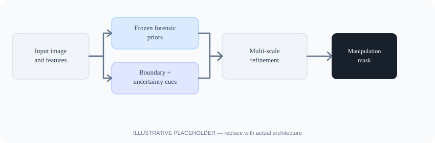
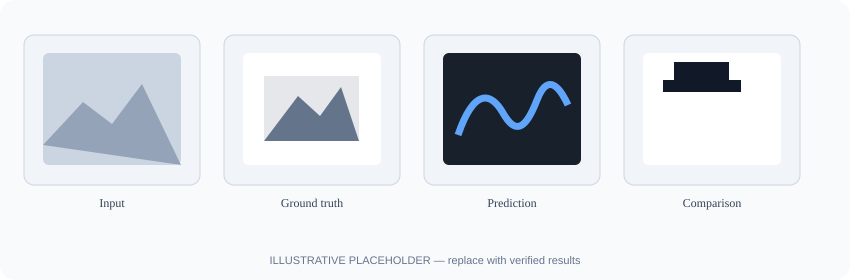

Boundary-guided refinement
Add a concise explanation of how boundary cues are generated and used in the final model.
WACV 2027 · Research Project
Information Coding Division, Department of Electrical Engineering
Linköping University, Sweden
* Corresponding author
Replace before publishing: The final paper abstract was not included in the information provided. Add the exact abstract from your manuscript here; avoid publishing this note as the paper's abstract.
BUFF-Net addresses image manipulation detection and localization through boundary- and uncertainty-guided multi-scale refinement, together with frozen forensic priors. Replace this sentence with the paper's verified abstract and reported contributions.
BUFF-Net is designed for image manipulation detection and pixel-level localization. Its title highlights three central elements: boundary-guided refinement, uncertainty-guided refinement across multiple scales, and frozen forensic priors.

Method overview. Replace this placeholder with the architecture figure exported from your paper.
Add a concise explanation of how boundary cues are generated and used in the final model.
Describe the uncertainty estimate, the scales involved, and how refinement is guided by uncertainty.
Explain which priors are used, how they are obtained, and why their parameters remain frozen.
Replace before publishing: No benchmark names, numerical scores, or result figures were provided. Add only results verified in the paper.

Qualitative comparison placeholder. Replace with authentic results from the manuscript.
Summarize the datasets, evaluation metrics, and key findings here. Include a compact table if it helps readers compare BUFF-Net with the baselines reported in the paper.
Show representative manipulated images, ground-truth masks, predicted localization maps, and relevant comparisons. Ensure all examples and labels match the final experiments.
Use the final bibliographic information once it is available. The BibTeX below is a template, not a confirmed publication record.
@inproceedings{munir2027buffnet,
title = {BUFF-Net: Boundary--Uncertainty Guided Multi-Scale Refinement Network with Frozen Forensic Priors for Image Manipulation Detection and Localization},
author = {Munir, Adnan and Mohaoui, Souad and Chang, Shizhen},
booktitle = {Winter Conference on Applications of Computer Vision},
year = {2027}
}